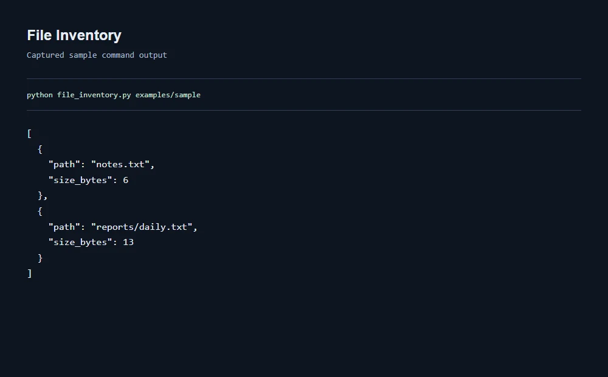

Engineering project · Runtime screenshot
File Inventory
Export relative file paths and byte sizes as sorted JSON or CSV.
Verified CLI example
Public source access pending.
Run the local demo
From the prepared project checkout, run these commands and open the address printed by the server. The repository may require access.
cd file-inventory
python file_inventory.py examples/sample
python -m unittest -vExample output
[
{
"path": "notes.txt",
"size_bytes": 6
},
{
"path": "reports/daily.txt",
"size_bytes": 13
}
]
Problem
A directory review needs a deterministic inventory without following links into unrelated paths.
Architecture
A Python standard-library scanner collects regular files, skips links and junctions, sorts relative paths and renders the complete report.
Engineering decisions
- Collect results before output so a failed scan produces no partial report.
- Skip symbolic links and directory junctions.
Implemented workflow
- Run the sample scan and inspect notes.txt followed by reports/daily.txt.
- Use --format csv to produce the equivalent tabular report.
Checks and evidence
The documented sample command and root-level unittest checks passed during this update.
- Executed the sample command with Python 3.13. CSV Cleaner passed two tests, File Inventory passed two tests and Log Analyzer passed one test.
Scope and next steps
- The tool reports paths and sizes, not content, hashes or change history.
- Redirect output outside the scanned directory to avoid including the output file.
Technology
Python · Standard Library
Preview availability
Screenshots show the prepared local version. Hosted demos remain pending, and source access may require permission. Local setup requirements and remaining limits are documented above.
← Return to portfolio